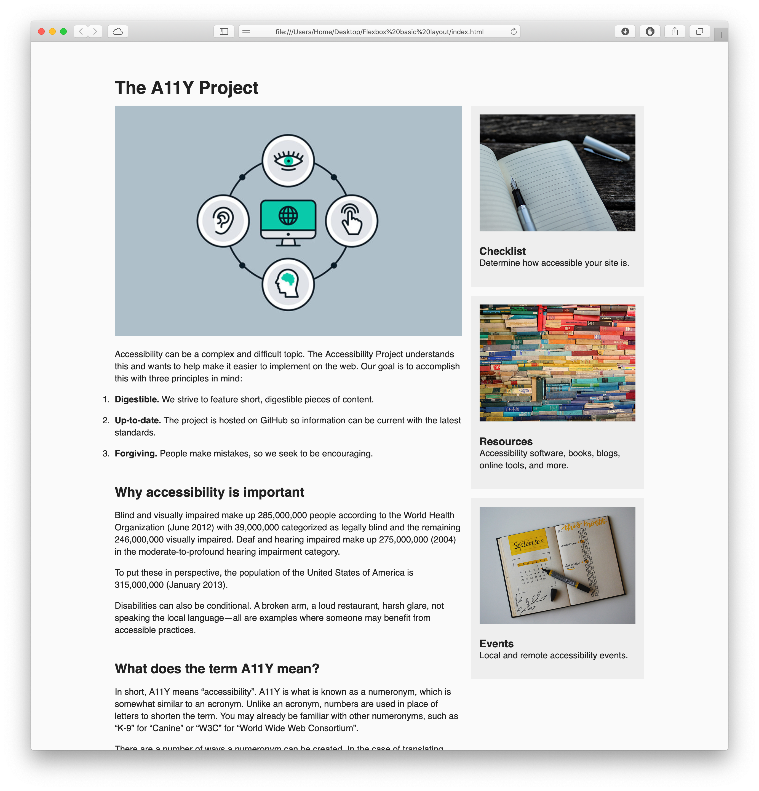
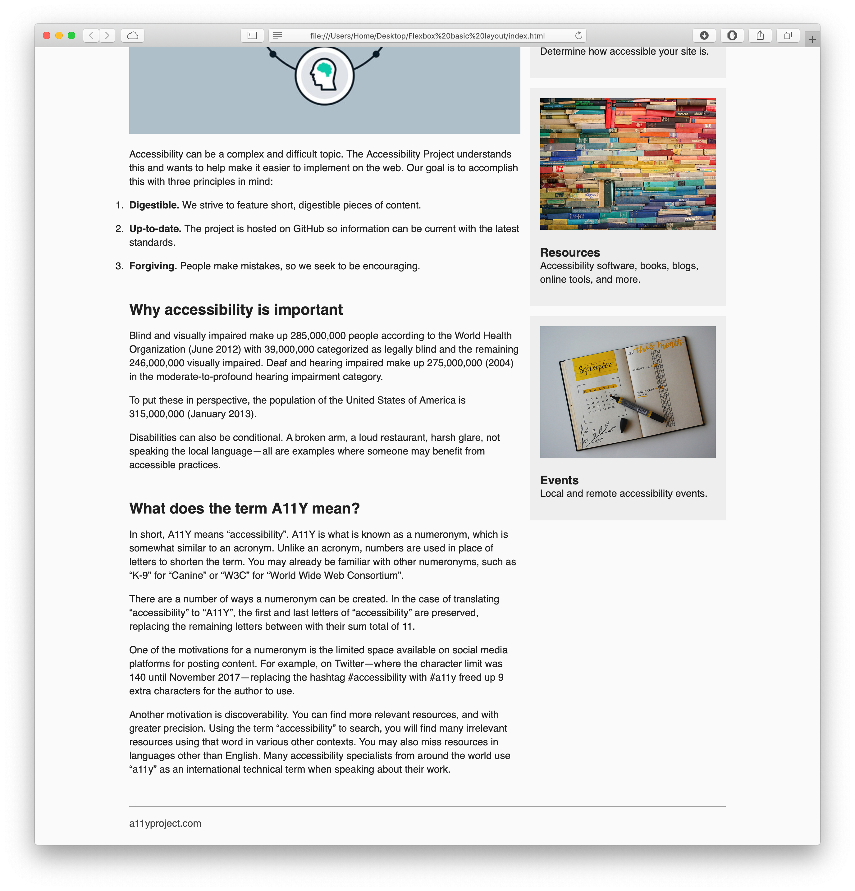

I’m providing the structure for a webpage and your job is to style it to the best of your abilities to match the following layouts:


As you can see, it’s the same basic layout for the first Flexbox assignment. (Same screenshot even.) The difference, at this point, is that it isn’t responsive.
Just make it look like the screenshot, using CSS Grid, not Flexbox, without editing the HTML file.
Publish your pages on the URL: username.github.io/grc339/css-grid-basic-layout
Download this zip file.
Unzip the file. It contains one HTML file, four image, and one CSS file.
Open the CSS in Brackets and the HTML on your favorite browser.
Give the proper value to the following lines on the CSS: 12, 13, 15, 19, 23, 28, and 32, using CSS Grid, not Flexbox.
Don’t change anything else on your CSS.
Work offline on your CSS file, until you found a solution that you’re happy with, but don’t change the HTML file.
The paragraph line of the article should not be longer than 16 words in any size. (If it gets too short in narrow screens, don’t worry for now.)
The main article must be approximately twice as big as the sidebar.
Have I mentioned that you are not allowed to change the HTML file?
You’ll be evaluated on your technical skills using CSS.
You don’t have to submit anything on Canvas.
Got to your public repository on GitHub, and open a new folder named grc339/css-grid-basic-layout/. ➤
Create a new index.html file and commit. ➤
Upload all six files (index.html, grid.css, and the four images) to your GitHub repository. ➤
Click on your name to check if it’s working.
Due Thursday, 2 July 2020, at 11:59 pm.